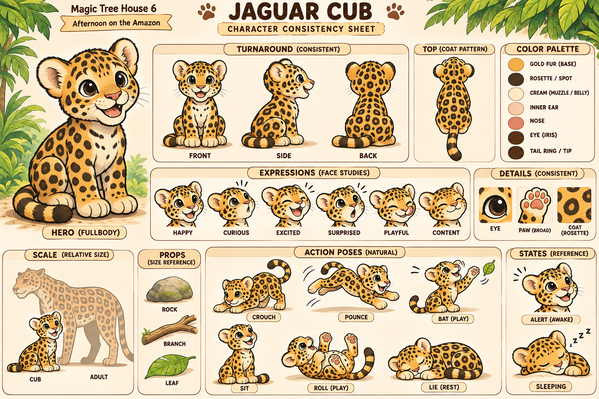
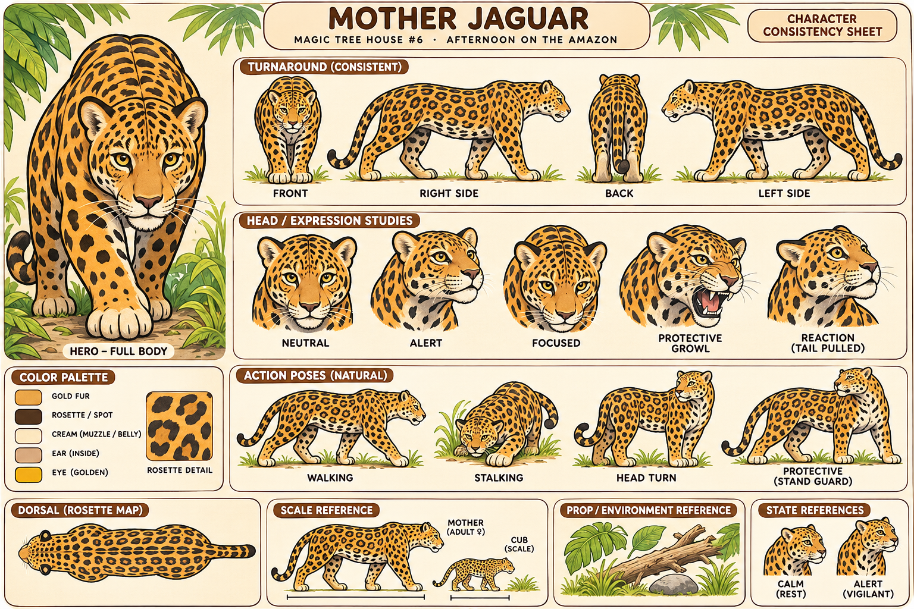

생성 전 원문과 아래 시트를 확인한다. 184–199, 200–213 두 배치. Jack과 Annie는 비에 젖은 상태와 앞 장의 복장·얼굴을 유지하고 Peanut은 Annie의 주머니에 있다. 나무 수관 아래는 직접 비가 적다. 작은 금빛 검은 반점의 새끼 재규어는 197번에서 처음 등장하고, 어미 재규어는 206번에 처음 보인다. 원숭이가 어미 꼬리를 당긴 뒤 어미는 원숭이를 쫓고 아이들은 도망간다. 상처나 공격 장면을 추가하지 않는다. 4×4 실제 경계를 검출하고 오버레이와 개별 크롭을 확인한다.



